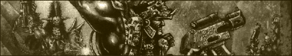
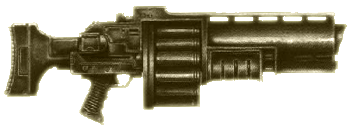
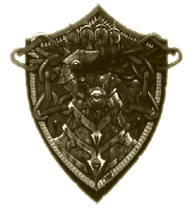
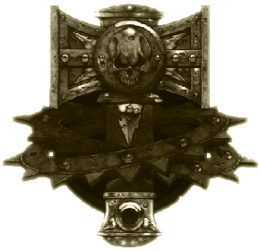
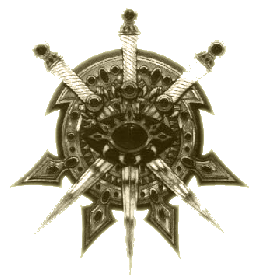
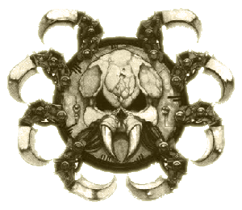
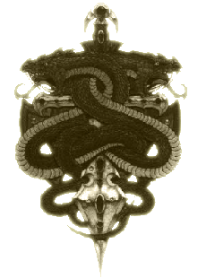
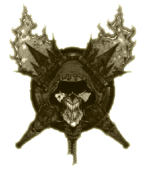

| |
Primus boly
házai

Primus boly
önmagában is oly nagy népességgel rendelkezik,
mint néhány önálló planéta a Birodalomban. A bolyváros lakosságának
meghatározó része az uralkodó nagy házak
valamelyikének területén éli alantas életét. Primus boly
jól elkülöníthetõ egységekre van felosztva a
tizenhárom nagy ház között, akár csak hétköznapi bolygókon az
országok. Minden ház különálló tradíciókkal,
sajátos nyelvi jelleggel, egyéni öltözködéssel és
stílussal rendelkezik, mintahogyan érdeklõdésük és
szokásaik is különböznek a többi házétól.
A nemesi házak
A hét legmeghatározóbb ház az úgynevezett nemesi
családok, melyek területe a felhõk fölé magasodó
teljes Csúcsot magába foglalja. Õk irányítják a
boly szinte teljes kereskedelmét. Szerteágazó
tranzakciókat folytatnak az Impérium megannyi
planétájával, akárcsak Necromunda többi
bolyvárosával. A nemesi házak közt folyamatos
versengés folyik a jólétért és a politikai
hatalomért, szüntelenül kutatják saját gazdagságuk
és hatalmuk kiterjesztésének lehetõségét, és ellenfeleik gyengéit.
Intrikák és az orvgyilkosságtól való félelem, ami
meghatározza az itt lakó családok mindennapjait.
A legbefolyásosabb nemesi ház a Birodalmi vagy
Kormányzó ház, a Helmawr. Területük a Csúcs
legfelsõ régióira terjed ki, mely az egész
bolyváros legelõkelõbb területe. Lord
Helmawr,
a család rangidõs vezetõje uralkodik az egész
bolygó felett. Õ képviseli a Földi Adeptus Terrát,
az emberiség birodalmának közigazgatási egységét a
bolygón.
Az univerzum szemében Lord Helmawr maga Necromunda,
a bolygó az õ saját játszótere, amit önön kénye
kedve szerint irányít. A nemesi házak kereskedõ
famíliái és pátriárkái egymást túllicitálva
versengnek kegyeiért, és buzgón hajtanak végre
bármit, hogy biztosítsák leszállási és kihajózási
jogaikat, kereskedelmi felhatalmazásaikat és
adókedvezményeiket. Azonban amíg látszólag Lord Helmawr kegyeit keresik, a többi nemesi ház
szüntelenül terveket szõ a háta mögött, remélvén,
hogy egyszer majd a Helmawr ház is elbukik, hogy
aztán õk örököljék a hatalmat.
Necromunda hét nemesi háza a következõk: a Helmawr
ház, a Catallus ház, a Ty ház, az Ulanti ház, a
Greim ház, a Ran Lo és a Ko’Iron ház. Ugyan ezek a
házak nem játszanak közvetlen szerepet az
alattuk fekvõ Bolyváros életében, létezésük mégis meghatározó az
ott lakók életében.

A nagy házak
A Fal néven ismert adamantium határvonal alatt
húzódik a Bolyváros, Necromunda hat nagy házának
territóriuma. Ezek a családok azonban híján vannak
a nemesi házak szerteágazó kiváltságainak és
befolyásának. Embereik a szûkös Bolyváros falai
közé vannak kényszerítve, ahol az élet
mocskos és nyomorúságos. A bolylakók, ahogyan õket
hívják, már megszokták a tompa fényeket és
a poshadt levegõt. Jobbat nem ismervén
végigrobotolják rövid életüket a céhek
gyártelepein, mûhelyeiben, és egyéb ipari létesítményekben, melyek a Boly elsõszámú
gazdasági ereje.
Ezek a házak mindenféle javak elõállítására
specializálódtak, az élelmiszerektõl kezdve a
hadfelszerelésekig. Az itt elõállított áruk a
felsõbb nemesi házakhoz kerülnek, ahonnan Necromunda termékei elérik a galaxis legtávolabbi
csücskeit is. A kusza ám meglehetõsen hatékony
kereskedelmi kapcsolat folyamatosan erõsödik,
köszönhetõen a Házak közt fennálló versenynek,
amelynek során a megtermelt javakat próbálják
minél kedvezõbben továbbadni a
felsõbb nemesi
házaknak.
A Bolyváros házainak népessége normális
esetben nem vegyül egymással, és a területek határai is jól
védettek behatolók ellen. Minden ház büszke egyedi
tradícióira és általában lenézi riválisainak
életvitelét. Ahol két ház territóriuma találkozik,
ott nem ritka, hogy köztes halálzónák, és
megerõsített védelem választja el a területeket
egymástól.
A hosszan tartó háborúk két ház között
azonban relatíve ritkának számítanak,
mindazonáltal nem ismeretlenek. Az erõszak szikráját
bármi lángra lobbanthatja a véletlen
határsértéstõl egészen a szándékos invázióig. A
leggyakoribb kiváltó ok a nyílt ellenségeskedésre
természetesen az elõnyösebb kereskedelmi szerzõdésekért folytatott
harc. Ennek egyik fajtája, amikor egy ház
megpróbálja lerombolni a szomszédos ház területén
található létfontosságú ipari létesítményeket, megakadályozva ezzel
bizonyos szerzõdésben megszabott feltételek
teljesítését. Ilyenkor általában a szomszéd
komolyabb veszteségeket szenved és elveszti az
adott szerzõdést a támadó fél javára.
A nyílt háború azonban ritka. Ennek
magyarázata egyszerûen az, hogy egy ilyen nyílt
viszály mindig csak az ellenséges házak malmára
hajtja a vizet, miközben a két szemben álló
család meggyengül. Mindemellett a nagy nemesi házak is
helytelenítik a nyílt, pusztító konfliktusokat,
hiszen ez rossz hatással van a kereskedelemre és
meggátolja az elõállított javak áramlását a
felsõbb régiókba. A nemesi házak inkább
elfordulnak, és új üzletfeleket keresnek a többi
nagy ház személyében, mintsem eltûrnének egy
kirobbanni készülõ bolyháborút. Következésképpen
Bolyváros nagyrészt egy békés ipari komplexum
képét láttatja, az emberek többsége pedig boldogan
adja oda életét, és fogadja el a szûkös
megélhetést a nagy házak valamely gyártelepén
robotolva. A hat nagy ház, mely meghatározza a
Bolyváros mindennapi életét a következõ: a Cawdor
ház, az Escher ház, a Goliath ház, a Van Saar ház,
az Orlock ház és a Delaque ház.
|
 |
Orlock
Az Orlock ház más néven a Vas háza
ként is ismeretes, ugyanis e család
territóriuma jórészt magas vastartalmú
salakgödrökön fekszik. A bolylakók
ezeket a vermeket bányásszák szüntelen
õsi idõk szemetét kutatva, közben elég
tiszta fémet nyerve ki a hulladékból,
hogy táplálják vele
gyárkomplexumaikat. A szemét
évszázadokon át tartó szüntelen
kitermelése több alacsonyan fekvõ
térség pusztulásához vezetett már. A
régmúlt idõkben ez a tevékenység
gyakran vezetett az egész bolyt
megmozgató földrengésekhez és több
óriási kupolaterem megsemmisüléséhez.
Az Orlock ház évszázadok óta teljesíti az
Ulanti Szerzõdés feltételeit,
amely egy rendkívüli hasznot |
|
| hajtó üzlet, az Ulanti nemesi ház alapvetõ
szükségleteinek kielégítésére. Elõttük a szerzõdés
a Delaque ház kezében volt, ám az Orlock ház
elbitorolta, megvesztegetve több Alsóvárosi
bandát, hogy szabotálják a Delaque telepekre
vezetõ üzemagyag vezetékeket. Ezen eset óta a
két ház megragad minden lehetõséget, hogy ártson a
másiknak. Öt évvel ezelõtt Lord Haden Orlock
orvgyilkosság áldozata lett, melyért a Delaque ház
tehetõ felelõssé. Emiatt aztán soha nem volt még
annyira feszült a két ház közti viszony, mint ezen
eset óta. |
Goliath
A Goliath ház által uralt területek rendkívül
kedvezõtlenül helyezkednek el Bolyvároson belül.
Ezen házhoz tartozik több is a legmelyebb és legbarátságtalanabb zónákból. Terjedelmes
gyártelepeik pedig még jobban
hozzájárulnak környezetük
elszennyezõdé- séhez, ráadásul
rendkívüli hõtermeléssel is jár. Ebbõl
kifolyólag területük gyakran töltött toxikus
szmoggal és sûrû, sötét füsttel. Ennek
kompenzálása végett az emberek errefelé erõsek és
szívósak, kiknek szemében a többi bolylakó
puhány és gyenge. Az igazság az, hogy minden
bolylakó természeténél fogva robosztus és erõs,
hozzáedzõdve a mérgezõ |
 |
|
| környezethez és a nélkülözéshez, amely hozzátartozik
mindennapi életükhöz. A Goliathok azonban rendkívül büszkék
arra, hogy a többieket is túlszárnyalva,
rendkívüli körülményeket is képesek elviselni.
A többi ház szemében a Goliathok mind barbárok,
nyersek és kiismerhetetlenek. A Goliath
létesítmények, mint például a harcoló vermek vagy
az Elesettek Fesztiválja csak tovább erõsítik szomszédaik amúgy sem túl barátságos véleményét
ezen házzal kapcsolatban. A méret és az erõ
errefelé a férfiasság mérõje. Ruházatuk pedig
kihangsúlyozója a fizikai erõ központiságát
társadalmukban. A vastag láncok és a szöges
karperecek gyakori látványnak számítanak errefelé. |
|
 |
Escher
Az Escher ház talán a legfurcsább,
legkülönbözõbb Necromunda egyéb házai közt.
Akárcsak a többi házat, ezt is egy uralkodócsalád
irányítja. A politikai élet és az intézmények mind
egy-egy közeli rokon vagy családtag kezében
összpontosulnak. Azonban ellentétben a többi
házzal, melyek populációja megközelítõleg
kiegyenlített, az Escher ház szinte kizárólag
nõkbõl áll. A ház kevés férfi tagja összeaszott és
bárgyú, köszönhetõen egy valószínû- síthetõ, a
család vérvonalában bekövetkezett genetikai
hiányosságnak. Ám bármi legyen is az oka, a
férfiak nem játszanak túl fontos szerepet az
Escher ház életében. |
|
|
Igazából Escher társadalomról csak attól
kezdve beszélhetünk, mióta megbirkóztak ezen
egyéni, kiegyenlítetlen populáció okozta nehézségekkel, és nem szenvedtek többé a hátrányaitól.
Az Escher ház hajlamos az arroganciára, és lenézõ
minden hímnemûvel szemben. Különösképpen elutasítóak a Goliath házzal, akiket túl egyszerûnek és
állatiasnak tartanak. A két ház õsi ellenségnek
számít, az összetûzések határaik mentén
mindennaposak. |
Van Saar
A Van Saar ház az általuk elõállított
technikai eszközök minõségérõl híres.
Technológiájuk nem fejlettebb, mint bárki másé,
hisz a technikai fejlõdés, mint folyamat nem
igazán létezik az Impériumon belül. Azonban a ház
gyártási technológiája meglehetõsen precíz és az
így elõállított termékek a legmagasabb minõséget
képviselik. A nemesi házak prémiu- mot fizetnek
minden egyes megvásárolt Van Saar produktum után,
ennek következtében pedig a Van Saar ház
életszínvonala talán a legmagasabb Bolyvároson
belül. |
 |
|
|
A ház tagjai éles elméjû, ám humortalan
emberekként ismertek, mélyen beléjük ivódott
rendszeretettel. Akárcsak a legtöbb háznak
Bolyvárosban, nekik is megvan a saját öltözködési
szokásuk, mely megkülönbözteti õket a többi
háztól. Ez általában szûk, testhezálló, majdnem az
egész testet takaró ruhákat jelent, melyek
kimondottan a lenti bizarr környezetben való
túléléshez lettek tervezve. A ruhák fél-áteresztõ
rétege csökkenti a test vízveszteségét, míg
bizonyos pontok színváltozásai figyelmeztetik a
ruha hordozóját az oxigénben szegény zónákra,
illetve az erõsen toxikus területekre. |
|
 |
Delaque
A Delaque ház a birodalmi Helmawr ház
speciális figyelmét élvezi, melyért nemcsak anyagi
javakkal, de információkkal is szolgál a
Necromundát irányító többi családról. A Delaque
kémek mindenütt megtalálhatóak szerte a Bolyon
belül,
megfigyelve a többi nagy ház tevékenységét. Néhány
szóbeszéd azt tartja, hogy a nagy házak bizonyos
tagjai, beleértve a nemesi házakat is, a Delaque
család szolgá- latában állnak.
A többi ház tehát érthetõ okokból
gyanakszik mindenre, ami a Delaquekkal kapcsolatba
hozható. Megjelenésük több évszázadnyi csalás és kémkedés
öröksége. A Delaquek tradicionálisan a hosszú
kabátokat részesítik elõnyben,
melynek
belsõ zsebeiben könnyedén rejthetõek el
fegyverek és egyéb nagyobb tárgyak. Legtöbbjük
rend- |
|
| kívül sápadt és legtöbbször kopaszok, suttogó hangjuk
pedig vékony és kísérteties. Sokan közülük
sötét ellenzõket vagy beépített
szûrõ-lencséket viselnek, hogy védjék
érzékeny látásukat. Emiatt legtöbbjük
érzékeny az erõs fényre. Dacára annak,
hogy gyakorlatilag egész Bolyváros
meglehetõsen homályos, a Delaquek területei
különösképpen sötétek és árnyékosak, amely illik az
olyan emberekhez, kiknek indokai és módszerei a
titkok homályába vesznek. |
Cawdor
A Cawdor ház a Megváltás Kultuszának
helyi erõdítménye, melynek prófétái az univerzum
végét jövendölik. Habár a kultusznak szerte a
bolygón vannak követõi, a Cawdor ház hivatalos
vallássá emelte a kultuszt. Emiatt a házat a
Megváltás Házának is nevezik.
A Cawdor ház viselkedése a többi ház
irányában meglehetõsen változatos, nagyban függ
a hittõl. Számos törvényük közül az egyik
legjellemzõbb, mely megtiltja, hogy megmutassák
arcukat másoknak. Emiatt aztán a Cawdor ház
követõi könnyen felismerhetõek
bonyolult kimunkálású maszkjaikról.
Ezen maszkok kidolgozása az avatatlan
szem számára sokszor igen bizarr és zavaró
lehet.
A kultusz egyébként egy meglehetõsen
szoros |
 |
|
| viselkedési formát követel meg,
melynek megszegõire kitoloncolás és egy
életen át tartó számûzetés vár. Azon
bolylakók, akik nem követik a kultuszt,
szemükben pusztán értéktelen hitetlenek.
Ezek után talán szükségtelen is
kihangsúlyozni, hogy a Cawdor és a többi ház közötti viszony igen
feszült. Gyakran megesik, hogy a többi ház
területein tevékenykedõ Megváltás Kultusz-hívõ
kitaszítottak, a Cawdor ház titkos támogatását élvezik. |
Fordította: Rince
(A fordítás a hivatalos Necromunda szabálykönyv,
The Houses of Hive Primus címû ismertetõje alapján készült.)
|
|